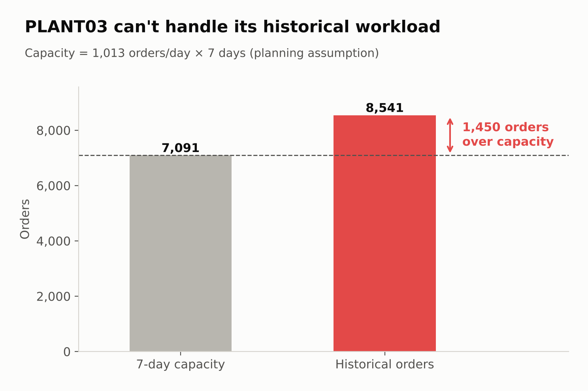
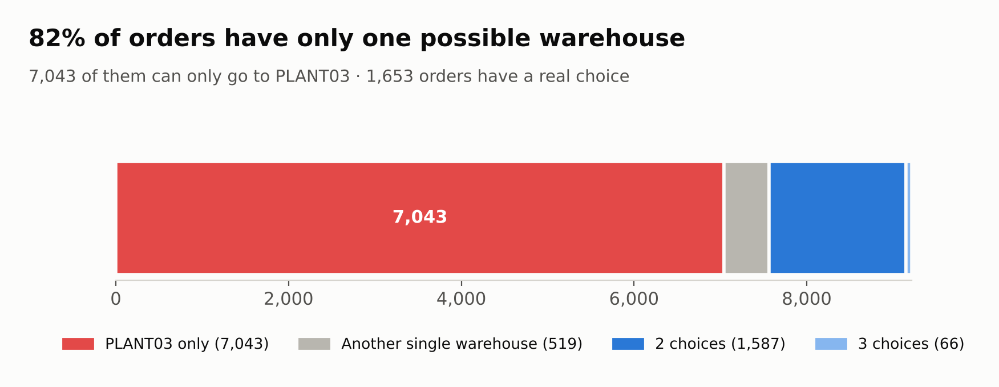
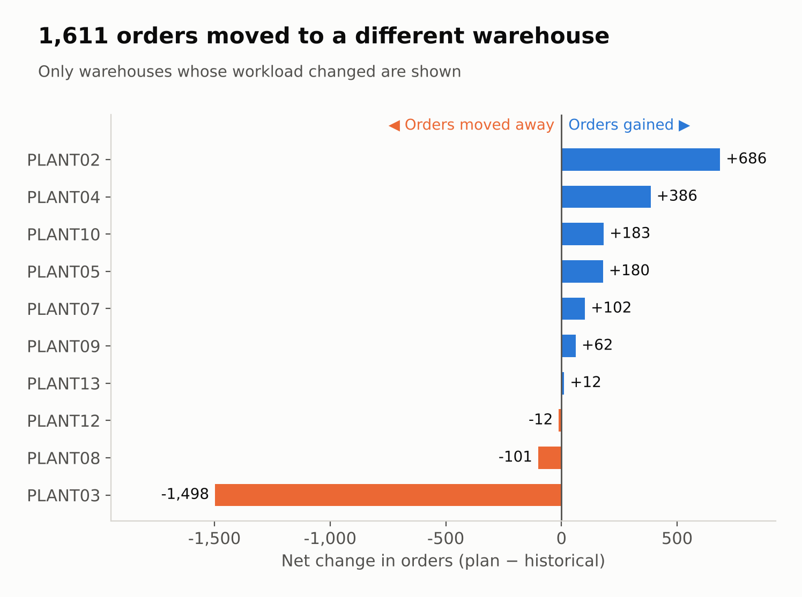
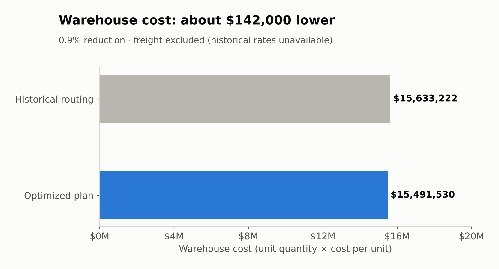
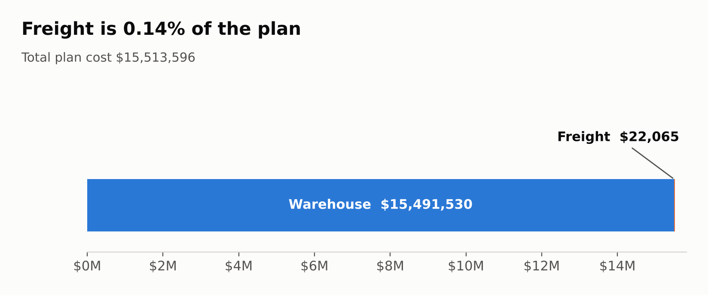

Executive Summary
Business question: Can the current network handle the historical order batch, and can eligible warehouse and route choices reduce its modeled cost?
I checked the rules in Excel, automated them in Python and built a capacity-aware assignment model. The resulting plan covers every order across seven days without exceeding daily warehouse capacity.
Public-data planning case. Warehouse savings use the same current rates for both assignments; they are not verified historical spending reductions.
The Challenge: Too Much Work at PLANT03
PLANT03 handled 8,541 historical orders. At its current limit of 1,013 orders per day, it can process only 7,091 orders in seven days. Keeping every historical assignment would exceed that scenario's capacity.

Why reassignment alone has limits
About 82% of orders have just one eligible warehouse. 7,043 must use PLANT03, so even the lowest possible dependence on that plant leaves only 48 spare slots over seven days.

Technical Approach
- Understand and check the data in Excel.Joined product support, VMI customer restrictions and plant-to-port links in Power Query. For product 1689547 in the PLANT03 example, I found 192 eligible orders at PLANT03, 89 at PLANT02 and 9 at PLANT10.
- Automate the same rules in Python.Reproduced the Excel example, then generated valid warehouse and route options for all 9,215 orders. Daily capacity counts orders, not units.
- Check feasibility before minimizing cost.Measured unavoidable warehouse demand and tested the seven-day assignment. PLANT03's 7,043 required orders imply at least seven processing days at current capacity.
- Choose whole orders, routes and days together.Used mixed-integer linear programming (MILP). Whole-order decisions, shared daily capacity and freight pricing groups make the choices depend on one another.
- Make the search practical and validate the answer.Removed impossible or always-worse options, simplified equivalent price calculations and supplied a checked starting plan. The final search kept warehouse, route and day choices open.
Data and tools used
The seven tables cover orders, freight rates, plant-port links, supported products, VMI customers, warehouse capacities and warehouse unit costs.
Tools: Excel, Power Query, Python, pandas, NumPy, openpyxl, SciPy and HiGHS through highspy.
Results & Operational Impact
1. Redistribute eligible orders
1,611 orders changed warehouse. PLANT03's assigned workload fell by 1,498 orders to 7,043. Every order was assigned once, with no daily warehouse-capacity violations in the saved plan.

2. Lower warehouse cost
Warehouse cost fell from $15,633,221.91 for the historical assignment to $15,491,530.16 for the new plan. That is a modeled reduction of $141,691.76, or about 0.9%.

3. Report the complete scenario cost
| Measure | Result |
|---|---|
| Warehouse cost | $15,491,530.16 |
| Freight cost | $22,065.48 |
| Total plan cost | $15,513,595.64 |
| Remaining possible improvement under the model | $4,394.34 |
| Gap to the cost lower bound | 0.0283% |
| Final solver time | 3.66 seconds |
The solver met the requested 1% tolerance and retained the starting plan. Exact optimality was not proved. The runtime measures the final solver stage, not the entire analysis.
View the warehouse and freight cost split

Challenges & Learning
The original solver ran for over six hours without a plan
A lower bound did not give me an assignment I could use. A checked starting schedule and a simpler equivalent pricing formulation made the search practical. I kept all 9,215 orders and did not permanently fix six days of assignments.
Power Query became hard to inspect
Freight joins expanded to about a million rows. I kept Excel examples and summaries as a record of the reasoning, then moved repeated checks to Python. Along the way, I fixed a missing-column step and preserved the original order IDs.
Missing historical freight matches limited the baseline
Historical carriers and weight bands did not always match current rates. I did not fill those gaps with zero costs. Customer-arranged freight was handled separately, with zero company freight cost and the applicable warehouse cost.
Other published totals were not directly comparable
Different order coverage, capacity rules and freight calculations change the problem being solved. I kept one run's outputs together and compared results only where the calculation basis was clear.
Assumptions & Limits
- All orders are available at the start of a seven-day scenario. Processing and dispatch use the same assigned day.
- Orders remain whole. Product, customer, port, service and daily order-capacity restrictions apply.
- Warehouse cost is quantity × unit cost, not daily holding cost.
- Compatible orders on the same route and day share a freight weight band. AIR charges apply per order; GROUND charges apply to the group.
- Delivery deadlines and delay penalties are not modeled. This analysis does not establish historical delays or customer complaints.
- PLANT03's 48 spare slots show limited headroom. A capacity-loss stress test has not been completed.
Project Resources
Explore the Excel workflow, Python implementation and project documentation.